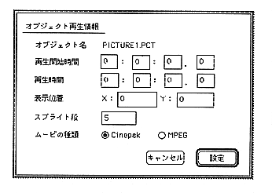

Return to previous page ｜ Return to menu ｜ Go to next page

Figure 2.18 Playback information
- Play start time
Playback start time for the scenario time axis.
- Playback time
The playback time of the object. If it is a picture, it means display time.
- Display position
The upper left coordinate of the object.
- Sprite stage
Input is possible for objects placed in the sprite stage of the object placement area. Use this when you want to change the sprite stage.
- Movie type
Specify whether the placed movie object is Cinepak or MPEG. This specification is used when playing with the author player. If set incorrectly, it cannot be played on the author player.
Return to previous page ｜ Return to menu ｜ Go to next page